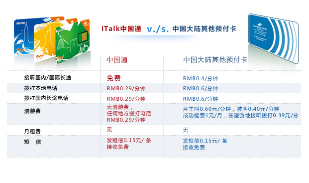

回中國？先買中國手機卡：iTalk中國通獨家奉送
（弗吉尼亞維也納5月10日）
你上一次回中國是什麼時候？有沒有碰到一下飛機就急着找地方換人民幣，有沒有到處找地方買電話卡的情況呢？一張電話卡將近100多的人民幣，話費還要額外計算，在北京一個價格，在上海一個價格，從北京打電話到上海還有一個價格。回國不管是出差還是旅行，手機話費都是一個不小的費用。更麻煩的事是，每次回國的時間不長，中國手機號碼又得老變，老朋友什麼的根本沒有辦法很好的聯繫。
怎麼辦呢？
不用擔心！iTalkBB攜手中國聯通共同推出iTalk中國通手機卡，為廣大海外華人提供最適合北美華人的中國手機計劃，量身定做的服務套裝，僅限中國大陸境外銷售。iTalk中國通，全面提供無號碼費，無月租費，無漫遊費，更沒有國內長途話費，一個價格，每分鐘只要RMB￥0.29，就可以在中國任何一個地方，撥打任何一通電話，再也沒有繁雜的計費了。同時iTalk 中國通接聽全免費，還特別提供直撥美國￥0.4/分鐘的超低國際話費。
比起中國大陸其他的手機卡服務，iTalk中國通不管是在價格上還是功能上都有絕對的優勢。
有關詳情，點擊此處查詢。
以上信息由第三方公司採集於2011年5月。
iTalk中國通限時預售中，只要你撥打1-877-482-5522，不管新老用戶都可以預先訂購iTalk中國通手機卡。
有關詳情，歡迎致電1-877-482-5522。
關於iTalkBB：
iTalkBB新電信是享譽全美的優秀通訊品牌，是國際電訊行業的領導和先驅。其以頂級全球網路和前沿技術為依託，以最具競爭力的價格為客戶提供高質、清晰的本地、國內及國際長途電話服務，以及高清中文電視直播、回播與點播服務。其電話業務能完全取代傳統家庭電話，並享受多重免費提供的附加功能如來電等待、三方通話、來電顯、來電轉接等。另有獨一無二的功能-中國大陸、台灣、香港、南韓當地號碼，當地親友只要撥打此號碼，就能接通到在美國的親友，而無需支付國際長途費用。 iTalkBB的高清中文電視服務，自問世以來便受到了廣泛的好評和歡迎。超過五十個熱門頻道支持實時直播與48小時回看，海量最新電影電視劇綜藝節目免費無限點播，讓用戶以最低價格盡享華語娛樂。 iTalkBB新電信將不斷努力，與您共同成就更美好的生活。 iTalkBB設有24小時中英文的客戶服務熱線1-877-482-5522和官方網站www.iTalkBB.com，一年365天提供不間斷的服務與更多信息的查詢。